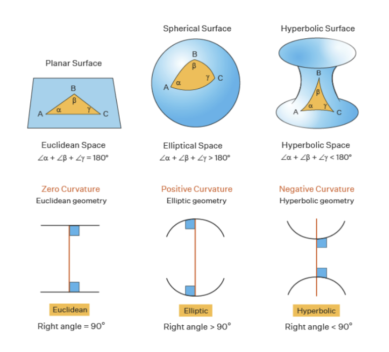
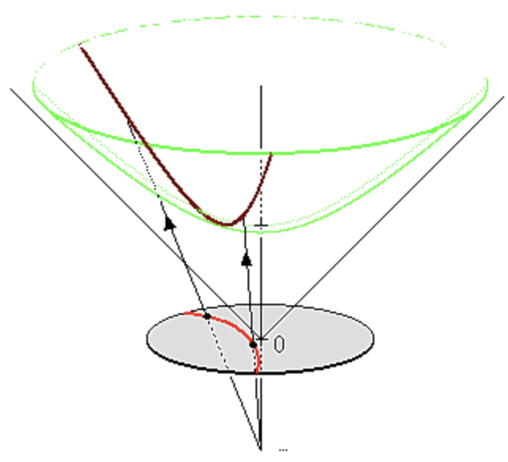
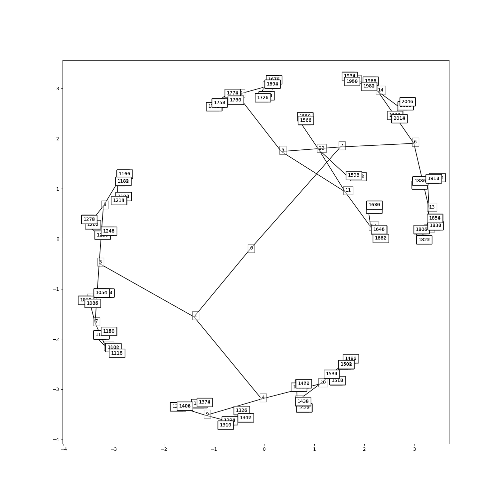
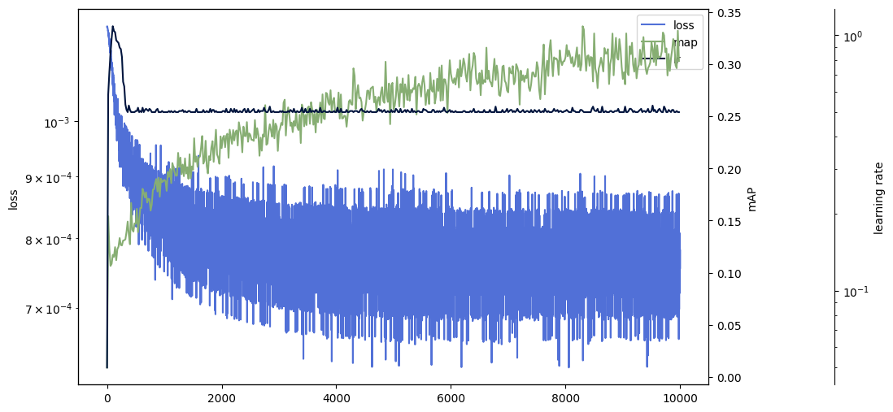
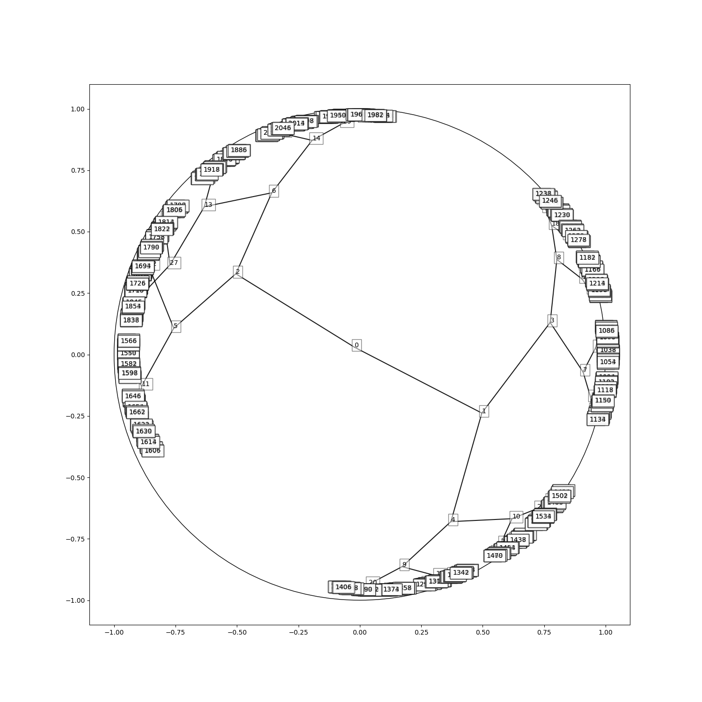
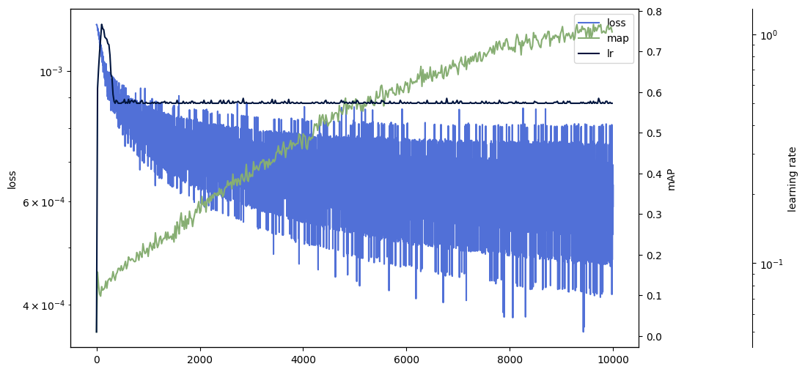

Intro
When we think of embeddings, we usually think of Euclidean embeddings, because most of the research carried out on embeddings has been done within the framework of Euclidean geometry. However, Euclidean geometry is only a particular type of geometry where certain axioms are assumed to be true - Euclid’s axioms. If the last axiom - which states that given a line a and a point that is not on that line, there exists only one line parallel to the given line that contains the point - is replaced, we can in fact construct different types of geometries with interesting properties.
In this article, we’ll take a quick look at the different types of geometry without going into details - that will require an article of its own - and see how and when we can use them in machine learning.
Non-Euclidean Geometry 101
Different types of geometry
There are essentially two ways of replacing Euclid’s last postulate:
- either you decide to assume that there are an infinite number of lines, in which case you’re in hyperbolic geometry
- or you decide to assume that there are no lines at all, in which case you’re in spherical geometry.

When you think about it, the Earth’s surface defines a spherical geometry, so it shouldn’t be too difficult to represent visually. However, this is not entirely true, and I encourage you to watch this video which goes a little further and is very well illustrated. Note also that local spherical geometry can be approximated by the classical 2D plane of Euclidean geometry, which is of paramount importance in the mathematical study of this geometry.
Hyperbolic geometry is more difficult to represent visually. There are different models, all of them being equivalents. When you think of hyperbolic geometry, think of a space that grows exponentially faster than Euclidean geometry.
Why not stick to Euclidean ?
If Euclidean space is the embedding space par excellence, why should we be interested in non-Euclidean geometry?
Let’s remember that the aim of an embedding method is to organize symbolic objects - e.g. words, entities, concepts - in such a way that their similarity or distance in the embedding space reflects their semantic similarity. Although embedding methods have proved effective in many applications, they suffer from a fundamental limitation: their ability to model complex models is intrinsically limited by the dimensionality of the embedding space. As a result, it has often been the case that a very large number of dimensions - several hundreds or more - are required to model complex relationships correctly in Euclidean geometry.
However, it has been studied and theoretically proven that spherical or hyperbolic geometry can be better equipped mathematically to represent certain relationships using lower dimensions. For example, it has been shown that any finite tree can be embedded in a finite hyperbolic space in such a way that distances are preserved approximately (Gromov 1987). On the other hand, Bourgain’s theorem (Linial, London, and Rabinovich 1995) shows that Euclidean space does not allow such low distortion for trees, even using an unlimited number of dimensions.
What about their usefulness in Machine Learning ?
Hierarchical representation
From now on, for the sake of simplicity, we’ll focus on hyperbolic geometry.
(Nickel and Kiela 2017) has shown that hyperbolic geometry can be used to account for the hierarchical representation of tree data. They use the Mammal dataset, which contains relationships between entities such as “Mammal > Ungulate”, which represents that Ungulate is a subclass of Mammal. Informally, hyperbolic space can be seen as a continuous version of trees and, as such, is naturally equipped to model hierarchical structures.
Which model for hyperbolic geometry ?
As previously mentioned, there are several models for hyperbolic geometry. Generally speaking, the two most widely used models in machine learning are the Poincaré model and the hyperboloid model. You can transform coordinates from one to the other, although the hyperboloid has one extra dimension, and they are equivalent.

Although (Nickel and Kiela 2018)’s work suggests that the hyperboloid is more stable than the Poincaré model, we’ll be conducting experiments using the Poincaré model as it’s more appropriate for visual results for a blog post.
Quick experiments
We will rely on a synthetic tree generated using NetworkX with a depth of size 10 and a branching factor of 2. It containq approxiamtely 2,000 nodes. In line with the method of (Nickel and Kiela 2017), we will train our model on the transitive graph closure, i.e. hypernymy.
We use a contrastive loss function to pairwise cluster hypernymy while rejecting non-neighbors. To assess the quality of the embeddings, we use the mean approximation error (MAP), which indicates how similar the neighborhood of each node in the embedding space is to that of the tree.




We can see that the MAP achieved for hyperbolic space is considerably higher than that for Euclidean space. In addition, the tree hierarchy is visible in the hyperbolic geometry.
Conclusion and food for thought
Hyperbolic geometry is an excellent tool for embedding tree structures or other graphs that exhibit a hierarchical structure. Some work (Gu et al. 2018) even suggests that they can be composed to achieve embeddings in the product of hyperbolic, spherical and Euclidean spaces!
However, using them is no free-lunch and has a few drawbacks:
- Firstly, because they’re a different kind of geometry, you can’t combine them directly with the classic +, x, ÷ used in Euclidean geometry. You need more complicated formulas to do this.
- Secondly, they are subject to instabilities (gradient explosion) and require special attention such as burn-in periods or learning rate adjustment.
- Thirdly, they are probably not designed for all types of hierarchy. In my own experience, they seem to shine with deep trees (depths greater than 15) where Euclidean space begins to be overwhelmed.
In short, like any technique, there’s a trade-off between the accuracy you want to achieve and the technical difficulties and debt if you want to incorporate them into an ML system.
I hope you’ve enjoyed it!